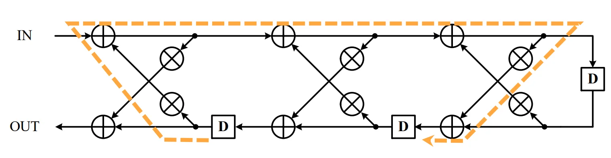
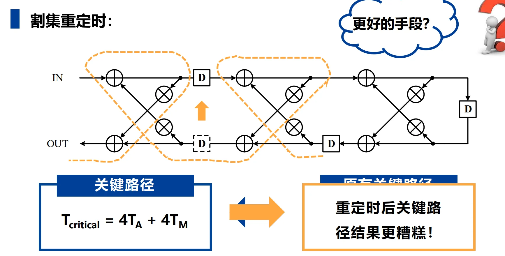
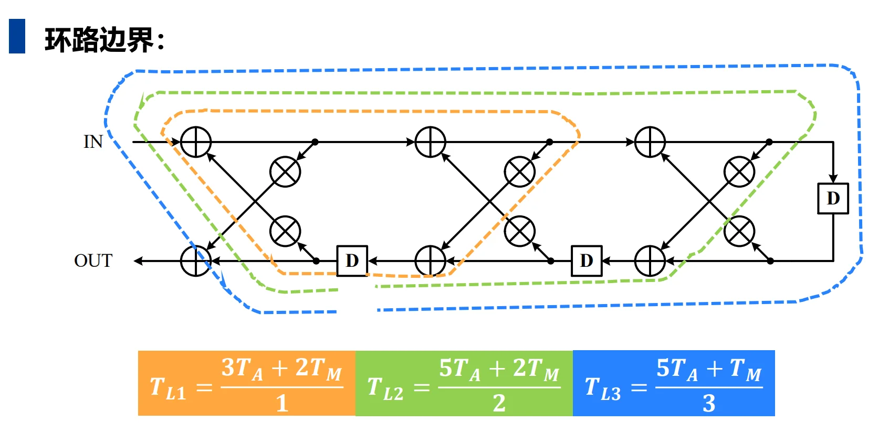
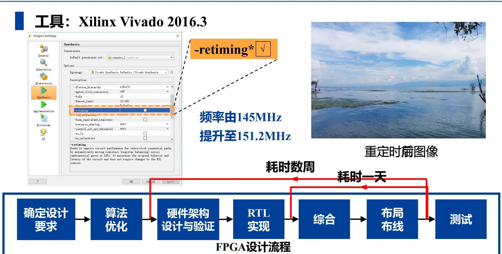

第五章：重定时技术
一、重定时技术基础
1.1 核心定义
重定时（Retiming）是一种电路架构变换技术，在不改变系统输入输出特性与功能的前提下，调整电路中延迟元件（寄存器/延时单元D）的数量与分布。
- 核心目标1：缩短组合逻辑关键路径，提升电路工作频率；
- 核心目标2：优化寄存器数量，减小芯片面积。
1.2 核心约束与不变性
重定时操作必须满足以下核心规则，否则会改变系统功能：
1. 环路总延迟不变：任意环路内的延时单元总数，重定时前后保持不变；
2. 迭代边界不变：DFG（数据流图）的迭代边界 \(T_{\infty} = \underset{L}{\text{max}}\frac{T_L}{W_L}\)不变（\(T_L\)为环路总计算时间，\(W_L\)为环路总延迟数），系统的极限处理能力不变；
3. 非负延时约束：重定时后任意有向边的延时单元数量 \(W_r(e) \geq 0\)，不能出现负延时。
4. 重定时技术不一定能够缩短关键路径延迟，不一定能够减小芯片面积。
1.3 割集重定时（基础方法）
操作规则：对电路的一个割集，在一个方向的所有边上增加k个延时，同时在反方向的所有边上减少k个延时；
特例1：节点重定时——子图仅为单个节点的割集重定时；
特例2：流水线技术——前馈割集（所有边同向）的割集重定时，仅需在同向边增加延时，无反向边需处理。
所有节点重定时值\(r(V)\)都增加常数值 \(j\) ， 重定时映射 \(G \rightarrow G_r\) 不变
1.4 数学求解方法
重定时值 \(r(v)\)
对于节点\(v\)，定义它的重定时值：
重定时方程
对边 \(u \rightarrow v\)，重定时后的延时 \(w_r(e) = w(e) + r(v) - r(u)\)，其中\(r(v)\)为节点v的重定时值；
约束
所有边满足 \(w_r(e) \geq 0\)，通过求解约束方程得到最优重定时值，适合复杂电路。
考虑环路
对于重定时的路径
重定时方程：\(W_r(p) = W(p) + r(V_k) - r(V_0)\)
内部结点同时存在一条输入路径和输出路径在路径\(p\)中。
我们试想，当\(V_0 = V_k\)时，即形成一个环路，此时重定时方程变为：
这表明环路的总延时在重定时前后保持不变。
这也就是说，重定时操作不能改变任何环路的环路边界，也就无法改变DFG的迭代边界，这是重定时的核心约束之一，也是保证系统功能不变的关键。
二、\(k\)-slow 技术的核心原理
2.1 第一步：为什么需要 \(k\)-slow？（单纯的重定时为什么会失效？）
重定时的一个铁律：重定时绝对不能改变任何一个反馈环路（Loop）中的总延迟单元（D）的数量。
这会导致一个致命的死局：
如果一个反馈环路中，组合逻辑的运算量非常大，但环路里的 D 却非常少（比如只有 1 个 D），你就没有足够的 D 可以拿来切分长路径。
这就好比你想把一条 1000 米的马路切成 10 段，但你手里只有一个路障，你怎么切？



例如上面的例子，在这个 3 阶格型滤波器中，存在长长的反馈路径。我们试图用割集重定时去优化它，结果发现因为环路里的 D 太少，移动来移动去，反而把关键路径搞得更糟了（从 \(4T_A+4T_M\) 变成了更长的路径）。这就是传统重定时的极限。
2.2 第二步：\(k\)-slow 是如何打破僵局的？（为什么能降低关键路径？）
既然手里路障（D）不够，那我们强行塞入更多的路障不就行了吗？
这就是 \(k\)-slow 的核心操作：把电路中所有的 \(D\) 直接替换成 \(k\) 个 \(D\)（即 \(kD\)）。
我们以课件 第 31 页 和 第 32 页 的极简例子（\(k=2\)）来看：
* 原始电路（左图）： 节点 A 和 B 构成一个环，环里只有 1 个 D。假设 A 和 B 的延时都是 \(1\ u.t.\)，那么没法切分，关键路径 \(T_c = 2\ u.t.\)。
* 2-slow 变换（右图，重定时间）： 我们强行把那个 \(1D\) 变成了 \(2D\)。
* 见证奇迹的时刻（第 32 页右图）： 既然现在环里有 \(2\) 个 D 了，我们就可以用你学过的“割集重定时”，把其中 1 个 D 往回退（或者往前推），卡在 A 和 B 的中间！
* 结果： 此时关键路径被完美切开，关键路径 \(T_c\) 从 \(2\ u.t.\) 降到了 \(1\ u.t.\)！你的时钟频率可以瞬间翻倍（跑得更快了）。
结论： \(k\)-slow 的本质是向电路（尤其是反馈环路）中注入额外的寄存器，为你后续做重定时、打断关键路径提供充足的“子弹”。这就解释了它为什么能逼近迭代边界。
2.3 第三步：凭什么强行加了 D，功能却保持不变？
你肯定会问：“凭什么原来打一拍，现在强行打两拍，结果还是对的？这不破坏算法逻辑吗？”
答案是：它并没有改变数据相互之间的相对数学关系，它只是让整个世界的时间“被拉伸（放慢）”了。
举个例子，假设原始的 IIR 滤波器公式是：
这意味着当前输出等于当前输入加上上一个周期的输出。
我们进行 2-slow 变换，把所有的 \(D\) 变成 \(2D\)，硬件对应的方程变成了：
这还能输出正确结果吗？能，前提是你给输入数据的方式必须改变！
（看课件第 31 页中间的表格和 33 页的文字）
- 原始输入： \(x_0, x_1, x_2, x_3 \dots\) （每个时钟周期喂一个数据）
- 2-slow 输入： \(x_0, 0, x_1, 0, x_2, 0 \dots\) （隔一个时钟周期喂一个有效数据，中间塞入无效的0或空操作）
我们来推演一下 2-slow 电路的运行：
* 周期 0: 输入 \(x_0\)。计算 \(y_{new}(0) = x_0 + \text{初始状态}y(-2) = y_0\)。
* 周期 1: 输入 \(0\)。计算 \(y_{new}(1) = 0 + \text{无用数据}y(-1) = \text{垃圾数据}\)。
* 周期 2: 输入 \(x_1\)。计算 \(y_{new}(2) = x_1 + y_{new}(0)\)。注意！这里的 \(y_{new}(0)\) 正好是 \(y_0\)！所以结果等于 \(x_1 + y_0 = y_1\)。完美！
* 周期 3: 垃圾数据。
* 周期 4: 输入 \(x_2\)。计算 \(y_{new}(4) = x_2 + y_{new}(2) = x_2 + y_1 = y_2\)。完美！
理解功能等价的核心：
2-slow 电路在偶数周期（0, 2, 4...）计算出的结果，和原始电路在（0, 1, 2...）周期计算出的结果完全一模一样。
这就好比一部原本以 1 倍速播放的电影，我们把它每一帧画面之间插入了一帧黑屏，以 2 倍的帧率播放（时钟加快）。你看到的故事内容（功能）完全没变，只是原本紧凑的数据被“稀释”了。
2.4 进阶：被浪费的奇数周期怎么办？（课件第 32 页的终极大招）
你会发现一个问题：2-slow 虽然让时钟频率翻倍了（关键路径从 2 降到 1），但由于我们要塞入空操作（0），我们实际处理数据的吞吐量并没有提高。甚至硬件有 50% 的时间在处理垃圾数据。
这不就成了“为了主频好看而自欺欺人”吗？
并不是！贺老师在第 32 页的第二条指出：“可交替进行奇偶两组独立的迭代，则硬件可以完全利用”。
这就是 \(k\)-slow 在工业界（比如视频处理、通信基站）大放异彩的真正原因：多路数据复用（Interleaving）。
既然奇数周期空着也是空着，我们为什么不拿来处理另外一路完全独立的数据呢？
* 偶数周期： 处理视频流 A（\(A_0, A_1, A_2\dots\)）
* 奇数周期： 处理视频流 B（\(B_0, B_1, B_2\dots\)）
此时，输入数据序列变成了：\(A_0, B_0, A_1, B_1, A_2, B_2 \dots\)
由于我们把 \(D\) 变成了 \(2D\)（内部寄存器能存两份历史数据），这两路数据在同一个硬件里流淌，互不干扰！
最终成就：
1. 关键路径被大幅砍断，时钟频率（Clock Frequency）极大提升。
2. 硬件不再有空闲周期，利用率达到 100%。
3. 用一套硬件，同时全速跑了两路甚至多路算法（如果是 \(k\)-slow，就能同时跑 \(k\) 路独立数据）。
这就是为什么在课件第 36~39 页，针对 100 阶那么可怕的格型滤波器，只要用 2-slow + 割集重定时，就能把庞大的关键路径从 \(101T_A+2T_M\) 直接拍碎到 \(6 u.t.\)（当然，如果我们只处理一个数据流，关键路径仍等效于\(12 u.t.\)，因为输入采样周期翻倍，相当于时间被拉伸了）。当然，即便是这样，性能提升也是巨大的（从 100 多降到 12）。
2.5 方法论
总结一下 \(k\)-slow 的方法论：
1. \(k\) 倍降速：把电路中所有的 D 替换成 kD，强行增加环路中的寄存器数量，为后续重定时提供足够的“子弹”。
2. 割集重定时：在 \(k\)-slow 变换后的电路上，使用割集重定时技术，合理调整寄存器位置，切断长路径，降低关键路径延迟。
3. 性能评估：如果仍然只输入一串数据流，即采样周期变为\(k\)倍，则等效关键路径会在割集重定时后的关键路径长度基础上拉伸\(k\)倍。为了更高效地利用硬件，可以采用多路数据复用（Interleaving），在不同周期处理不同数据流，达到同时处理多路数据的效果。
2.6 效果
